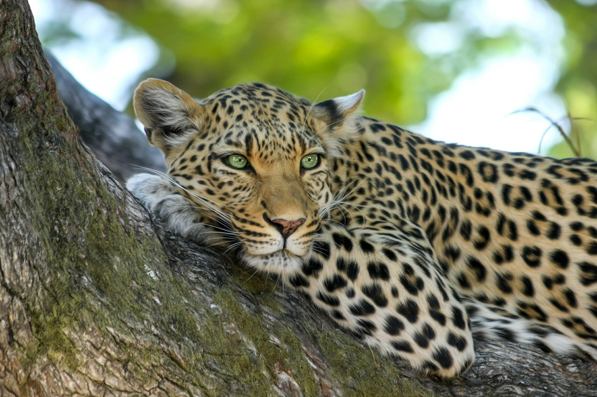

Pelisivu
Eläinvisa
Seuraavassa visassa tutustut eläinmaailman salaisuuksiin ja mielenkiintoisiin faktoihin. Klikkaamalla opit aina jotain, oli vastaus sitten oikea tai väärä.

Sinivalaat ovat yleensä 16–30 metriä pitkiä ja pyrstön leveys on noin 7,5 metriä. Aikuisen sinivalaan paino vaihtelee 90 ja 150 tonnin välissä, mutta painavimmat yksilöt voivat painaa jopa 200 tonnia. Jo pelkkä sinivalaan sydän painaa noin 680 kiloa.
Miekkavalas häviää sinivalaalle reippaasti koossa. Miekkavalaan koko vaihtelee sukupuolen mukaan: uros painaa 7–10 tonnia ja naaras 4–6.
Maitovalas on näistä kolmesta pienin. Se voi kasvaa 3-6 metriseksi, mutta useimmat yksilöt jäävät vain noin kolmen metrin mittaisiksi.
Aikuinen komodonvaraani painaa noin 70 kiloa, mutta vankeudessa elävät yksilöt ovat yleensä tätä painavampia.
Kauluslisko painaa murto-osan komodonvaraanin painos. Sen massa vaihtelee puolesta kilosta kiloon ja pituudeltaan kauluslisko on 60–70 cm.
Sisilisko on vaihtoehdoista pikkuruisin, sen ruumiin pituus jää yleensä alle seitsemään senttin, mutta Suomessa on tavattu myös 16-senttisiä sisiliskoja.

Hirvi painaa 200 kilogrammasta 825 kilogrammaan. Sen ruumis voi olla kolme metriä pitkä ja säkäkorkeus voi olla jopa 2,3 metriä. Uroshirven erottaa naarasta helposti, sillä uros selvästi suurempi kuin naaras ja vain uroshirvellä on sarvet.
Karhun pituus on 135–250 senttimetriä ja paino 60–300 kilogrammaa. Samoin kuin Suomen suurimalla nisäkkäällä eli hirvellä, uros on selvästi suurempi kuin naaras.
Susi on elävistä koiraeläinlajeista suurin. Yleensä uros on kookkaampi kuin naaras, yksilöiden koot vaihtelevat 100–140 senttimetsiin ja paino 20 kilogrammasta 50 kilogrammaan. Suurimmat susiyksilöt elävät Alaskassa sekä Kanadassa.
Ahven on maamme kansalliskala, se onkin levinnyt koko Suomeen lukuun ottamatta pohjoisen käsivarren aluetta. Se liikkuu parvissa ja päiväsaikaan etsimässä ravintoa. Öisin ahven vetäytyy yksin lepäämään pohjan kasvuston suojiin.
Kuhaa esiintyy Suomessa maamme etelä- ja keskiosissa. Se on melko lämpimien vesien kala, joka sisävesien lisäksi elää myös vähänsuolaisessa murtovedessä. Hyviä kuhavesiä ovat suuret ja sameavetiset, jopa hieman rehevöityneet järvet.
Hauki on elinvoimainen laji, joka on levinnyt laajalle ja pärjää monenlaisissa eri vesistöissä. Suomessa hauki on erityisen suosittu vapaa-ajan kalastuksen saaliskalana heti ahvenen jälkeen.

Gepardi on sirorakenteinen kissaeläin, joka elää Afrikassa sekä Aasiassa. Gepardi kykenee juoksemaan yli 90km/h, mutta se pystyy ylläpitämään huippunopeuttaan vain muutaman sadan metrin verran.
Antilooppi ei itsessään ole eläinlaji vaan nimitys, jota käytetään monista onttosarvisten heimoon kuuluvista eläinlajeista. Kuvassa on beisa eli keihäsantilooppi, joka elää Afrikan mantereella.
Leopardi eli pantteri on Afrikassa ja Etelä- ja Itä-Aasiassa elävä kissaeläin. Leopardeja elää hyvin vaihtelevissa elinympäristöissä ja kissaeläimistä helposti mukautuvin. Leopardia tavataan puoliaavikoilla, sademetsissä, vuoristoissa, pensastoissa, savanneilla, ruohoaroilla ja Itä-Siperian lumisissa metsissä.